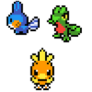
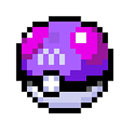
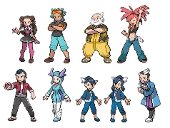
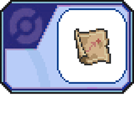
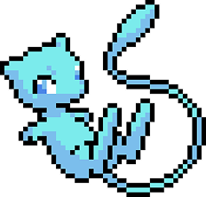

Starting Out
Before starting, you need a Pokémon Emerald save with the Old Sea Map event active. The map lets you take the ferry to Faraway Island later in the game.
When starting out in Hoenn, you can choose between Treecko, Torchic, and Mudkip. Any starter works for the shiny Mew hunt, so just pick the one you like.
Starter Checklist
- Back up your save.
- Check that the Old Sea Map event is active.
- Choose a starter.

Tip: Back up your save
before making changes
to the event.The Master Ball
The Master Ball can catch any wild Pokémon in one throw. You can find one inside Team Aqua’s Hideout near Lilycove City.
As you go through the hideout, use the warp panels to find the room with four item balls. Pick up the Master Ball and save it for shiny Mew.
Master Ball Checklist
- Find Team Aqua’s Hideout near Lilycove.
- Explore the rooms using the warp panels.
- Collect the Master Ball.

Tip: Keep the Master Ball
in your bag until you
find shiny Mew.The Elite Four
To battle the Elite Four, you need all eight gym badges. After getting the last badge, make your way through Victory Road to reach the Pokémon League.
You’ll face Sidney, Phoebe, Glacia, and Drake before battling Wallace, the Champion. Beat all five to enter the Hall of Fame.
Pokémon League Checklist
- Sidney - Dark
- Phoebe - Ghost
- Glacia - Ice
- Drake - Dragon
- Wallace - Water

Tip: Check your team’s HP
and PP between battles.Faraway Island
With the Old Sea Map event active, visit the ferry in Lilycove City. The crew will recognize the map and take you to Faraway Island.
Once you get to the island, follow the path into the forest. Watch the tall grass as you walk. The patches that move show you where Mew is hiding.
Faraway Island Checklist
- Have the Old Sea Map ready.
- Visit the ferry in Lilycove City.
- Travel to Faraway Island.
- Enter the forest.

Tip: Check that you have
your Master Ball before
going into the forest.Hunting for Shiny Mew
Follow Mew through the tall grass and interact with it to start the battle. A regular Mew is pink. The shiny Mew you’re looking for is light blue.
If Mew is pink, run away, leave the forest, and go back in to find it again. When you finally see a blue Mew, use your Master Ball and save your game after the catch.
Shiny Mew Checklist
- Find Mew in the grass.
- Check its color.
- If it’s pink, run and enter the forest again.
- If it’s blue, catch it.
- Save your game.

Tip: Running away lets you
encounter Mew again without
restarting your game.